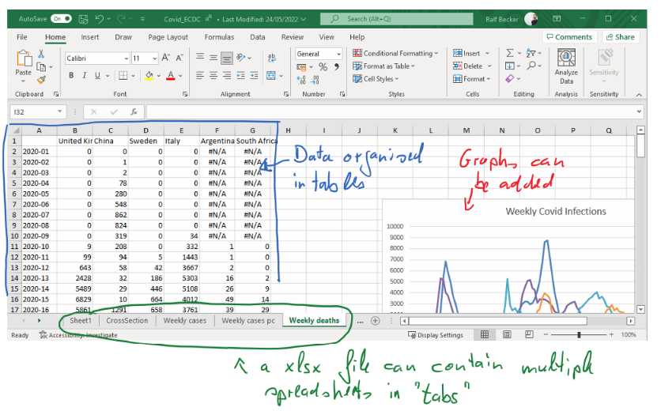
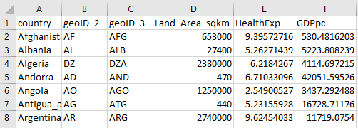

6 Dealing with real life datasets
6.1 Excel
Excel is an industry standard spreadsheet software by Microsoft. It is by far the most common spreadsheet software and if you can work in Excel you will be able to work in most other spreadsheet softwares (such as Numbers for Macs or Google Sheets). A spreadsheet organises data in tables and that is the most common way to present data.
Being “fluent” in Excel is absolutely critical for your time as a student and, more importantly, for your time after University. You will therefore have to learn a number of critical skills in Excel.
- Data Entry
- Re-arranging data into a well organised table
- Sorting and filtering data
- Cleaning Data
- Using formulae / Calculate new variables
- Merging Data
- Calculating Summary Statistics
- Producing Graphs
6.1.1 File Formats
Excel files have extension “xlsx”. Some Excel files which have been created on old versions of Excel would have the extension “xls”.

Another common file formal for spreadsheets is a “csv” file. That stands for “comma separated values”. While you can open “xlsx” files only with a spreadsheet software, the advantage of a “csv” file is that it is basically just a text file in which you can find the values of the data table. For instance the same data as in the earlier image would look like this in a “csv” file:

If you open a “csv” file with a spreadsheet software, the software will automatically present the data as if it was a spreadsheet. However, you cannot save any graphs or multiple tabs in “csv” files. Such files are very popular for storing large datasets, as the resulting file sizes are significantly smaller than equivalent “xlsx” file sizes.
6.2 A Good Data table
Data should be organised in tables. This is not a doctrine and indeed if you have very high-dimensional data (many variables and many observations) then there may well be better (more efficient) alternatives. But for the purpose of this unit we will be thinking about tables.
Here is an example of a well structured, yet very simple table.

You need to think about observations (in rows) and variables (in columns). In the example you see for instance the observation for Afghanistan. For each observation we have information (variables!) on the size of the Land Area, Health Expenditure and GDP per capita. You can also see that the country information comes in three forms (three variables): “country”, “geoID_2” and “geoID_3”. The two latter are abbreviations for countries in either two or three letter codes. These are super useful as you will see in the worked example below (see IBAN codes.
You can see that all information for any particular country is organised in one row (e.g. row 2 for Afghanistan, row 6 for Angola). All information for the same variable is presented in the same column (e.g. col D for the Land area and col F for the per capita GDP). This type of clean organisation is super important, but sometimes you will have to first do some work to get there.
6.3 Data Sources
There are many places from which you can download data. It is impossible to list them all, but a selection of good places is listed on the Economics Department list of data sources.
7 Excel Skills
In this unit we will help you develop your Excel skills. Statistics specific functions you will need will be introduced in this unit. But, we do assume that you have some basic spreadsheet skills. The internet and particularly YouTube is a great place to learn important skills. There are too many places to list them all, but the Economics Department has collected a few very useful ones here.
8 A Worked example
We will work through some key Excel skills by looking at a particular example. Our aim is to create the table with country indicators which we saw an excerpt of in the previous image.
The actual data are in three individual data files:
- CountryIndicators_2019_GDPpc.csv, containing the GDPpc in dollars per year per person
- CountryIndicators_2019_HealthExp.csv, containing a countries Health Expenditure as a percentage of GDP
- CountryIndicators_2019_LandArea.csv, containing a countries land area in square kilometers
All data are from the excellent Gapminder website.
Inspect the three files to see which variables are in the files. You will find that not all files have all the relevant country identifier variables. You should merge the three files such that the resulting file has the structure illustrated above.
As you do so, you should check for
- implausible values (can you find the correct ones)
- missing countries (i.e. not all countries appear in all three files)
- missing values for country identifiers
- inconsistent country names
Finally, you should add two new variables to your data file
- a variable which shows the GDP per capita in 1000’s of dollars (i.e. the entry should be 10, if the GDP pc is 10,000 USD).
To do this you should use formulae in Excel. - a new variable which indicates which continent each country is in.
It is best to not do that manually. You should try and find a table somewhere on the internet that contains a list of country names (or better identifiers) and the relevant continent. You can then merge the information.
The process of achieving all this is a combination of what we call data cleaning and data wrangling.
The following video provides a walk-through this task (You Tube, 55min)
If you followed the walk-through and worked on your own version, you should be able to answer the following questions (all referring to 2019 data).
What is the Excel keyboard shortcut to undo your last action in Excel (e.g. undo the deletion of columns which you realise was unwise).
Which country has the highest GDP per capita in South America?
Order Israel, Japan, Iran, Saudia Arabia and Jordan according to Health expenditure as a percentage of GDP (highest expenditure to lowest).
Top:
2nd:
3rd:
4th:
5th: